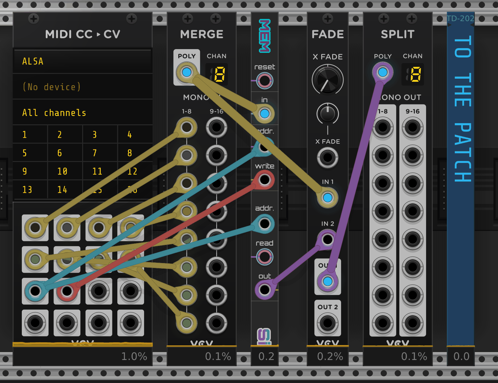

Mem¶
Summary¶
Mem is a polyphonic sample-and-hold memory whose addresses are arbitrary voltages, not numbered slots. It stores up to 64 addresses, each with up to 16 channels, and reads the closest.
Inputs and output¶
Addresses are arbitrary voltages, not numbered slots. The write address addr. stores the
polyphonic Data in at its current voltage. The read address addr. selects the closest stored
address for output out. Exactly halfway between two stored addresses, the lower one is read.
Reading empty memory gives 0 V. Each address input is monophonic.


The write trigger write and read trigger read accept either mono or polyphonic triggers. A mono write stores every channel present at in, and the address takes that channel count; a mono read restores all stored channels. Polyphonic write triggers update only their corresponding channels. Polyphonic read triggers update only their corresponding output channels.
With either trigger input unconnected, a change at its matching address input performs a full write or full read. The Data output holds its value until a read occurs.
Behavioral notes¶
- A mono write replaces an existing equal address, or the nearest address when storage is full.
- Polyphonic writes do not reduce a stored address's channel count.
- Polyphonic reads do not reduce the output channel count; channels absent from stored data read as
0 V. - reset clears all stored addresses. A write trigger at the same moment is ignored. With write
unconnected, nothing is written until the write address changes. With read unconnected, out
drops to
0 V. - Mem saves its stored addresses and the current out voltages with the patch.
Initializekeeps them; use reset to clear memory.
Patch ideas¶
Store and recall controller settings¶
Put Mem between a MIDI controller and the patch it controls. In VCV MIDI-CC, merge the knob outputs
into in and split out to the patch. Patch one CC to both addr. inputs and set a row of buttons
to send it on press, each with its own value. Patch a store button's CC to write. Turn off Smooth CC in MIDI-CC's menu so addresses don't glide.

Each address button recalls its settings at out; the store button saves the current knobs there. A crossfader between the merged knobs and out blends the live controller with the memory.
Limitations¶
With write unconnected, reopening a patch writes nothing while the write address stays the same. If the address source starts at another voltage when the patch loads and then returns to its saved voltage, Mem treats the return as an address change and overwrites that address with in. Connect write to keep stored values intact across reloads.